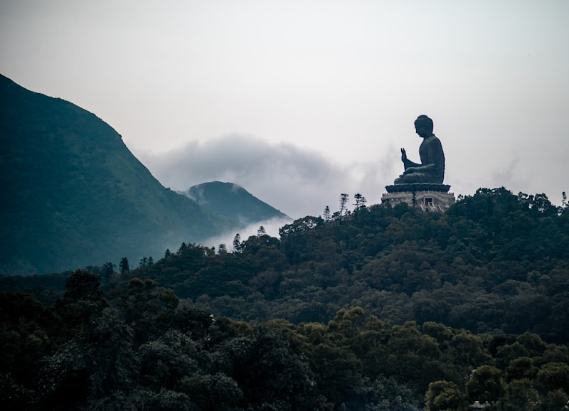
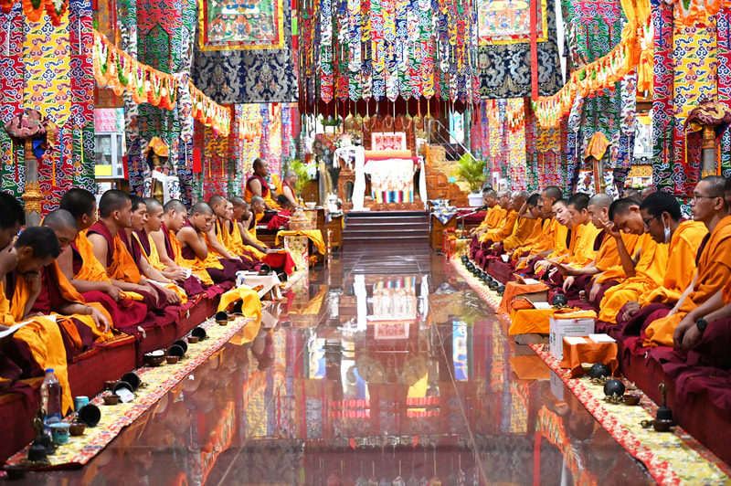
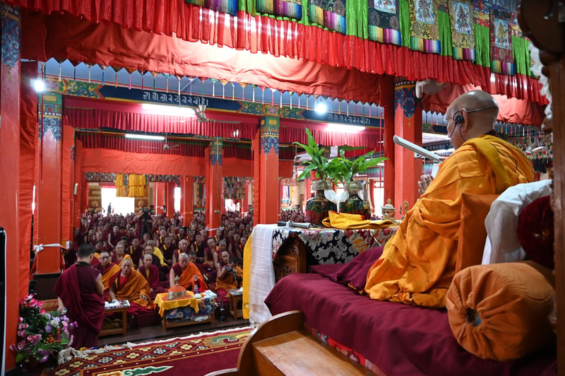
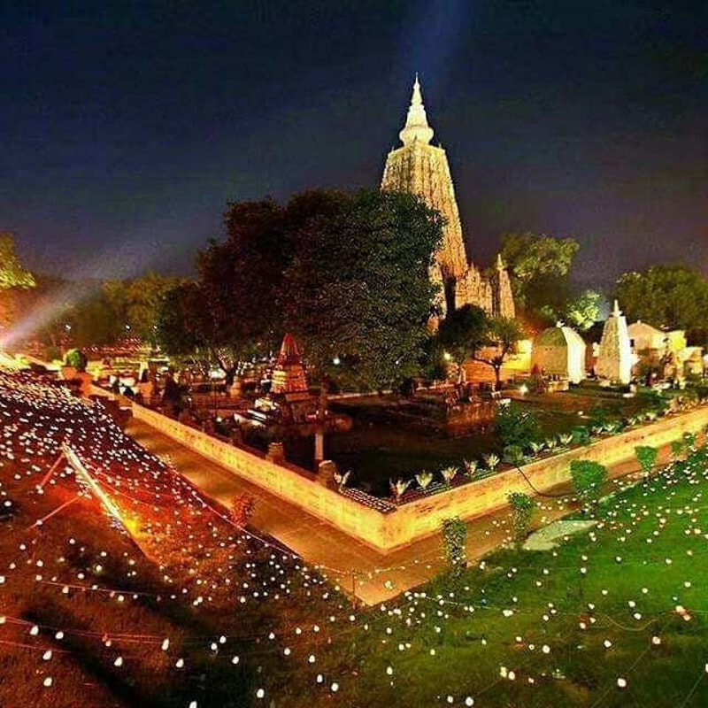

Frequently asked questions about Tibetan Buddhism, Pujas, and our monastic community.
Whether you are new to Tibetan Buddhism or a long-time practitioner, we hope these answers help deepen your understanding of our tradition and the spiritual services we offer. If you have additional questions, please don't hesitate to contact us.




Feel free to reach out to us. We're happy to help you understand more about our tradition and how you can get involved.
Choose how you'd like to reach us